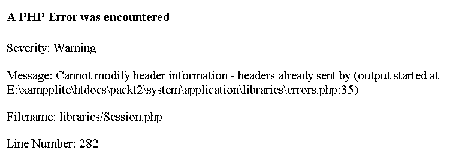
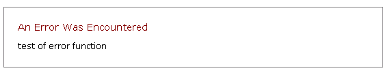

第十二章 产品版本、升级和重大决定
伟大的一天终于到来了！你的网站在本地环境中已经运行得足够好，是时候把它上传到远程服务器上使之成为一个正式运行的网站了。这件事按说很容易：上传所有的文件，包括系统文件夹的全部、更新config设置，复制完成后连接到数据库，以及其他。有时候，这的确很容易。
在你把重要的一切呈现在风投或公众视野的前夜，也就是在还没完成时。此时，为了防止出现意外，这一章将告诉你：
- 你该在config文件中设置什么
- 出现问题需要的一些诊断工具
- 可能出现问题的服务器与本地服务器的隐性差异
- 几点安全提示, 你将身处于大千世界
然后，这一章还包括了升级以及CI在最近几年的一些更新。它稳定吗? 当要提交一个重要网站时你该如何选择？你该如何操作？一旦你的网站开始运作，而CI推出了新版本你又该如何应对？
最后，我们简短地讨论如何针对CI的核心做你的自定义修改。它就在那里，它是开放源代码的，是可以修改的――但是否可行是另一码事。
12.1 连接：检查 Config 文件
系统错误通常是在接口上的。这就是为什么需要config文件：给你一个地方放那些接口。如果你还没这么做，你已经错过CI最主要的优点之一。
主要的接口问题可能是：
12.1.1 URL
CI通过查找文件进行工作。当用户连接到index.php，然后开始运行整个程序。至少，它应该运行。确定你在config文件中已经正确地设置好Web地址和其它服务器地址。Web地址是你的网站根目录。而服务器地址则可能要去问你的ISP，通常在他们提供的“文件管理”菜单中也有。
我尝试设置子域时曾经遇到过一些特殊的问题。虽然许多主机允许这么做, 但将域直接映射到目录也许并不是你所希望看到的。
12.1.2 数据库
设置并连接到数据库是一个主要议题。查看你的config文件与config/database文件。你需要确定有正确的网站地址与服务器地址，正确的数据库名、地址、用户名与密码。小心前缀――它有时会自动添加的，比如你的网站叫“fred”，你的数据库名为“mydata”，而你的用户名是“mylogin”，但是在服务器上它们会叫做“fred_mydata”、“fred_mylogin”等等。
有时，它会在数据库中创建一个新的用户，并设定了登录用的用户名和密码，即使你已经有一个了。我也不知道为什么，但就是会这样。
在config文件中，你可以设定CI接受不同的URL协议类型，以决定服务器如何处理URI字符串。默认值是：

$config['uri_protocol'] = "auto";
如果它不能正常工作，还有其他四个选项可以试试看。如果没有选择合适选项的话，你可能会发现你的网站不能完全正常的运作，（例如）表单不能调用目标页。
12.1.3 其它 config 文件
如果用户没有指定明确的controller/method（比如他们仅仅登录到www.mysite.com），config/routes文件则会设定程序执行的默认路径。其默认值可能是：
$route['default_controller'] = 'index';
如果你重新命名过系统文件夹，就必须记得你还需要在网站的根目录中修改index.php文件。该值默认为：
$system_folder = "system";
12.2 找出 PHP 4/5 和操作系统间的差异
CI应该能够兼容PHP 4.3及更高版本。但这不意味着你写的任何的PHP程序都能正常工作――如果你在使用PHP 5，但正在向一个PHP 4服务器迁移时，就可能会遇到由于版本不同引发的问题。
（无论哪一个版本的）PHP环境都可以不同的方式搭建。值得一做的是在你本地和远程服务器上都运行phpinfo()，以找到它们的差异。
微软和Linux服务器上的大小写敏感是不同的。所以当你在一台Windows操作系统的PC上开发你的网站，然后上传到一台Linux服务器上，可能会收到出错信息，报告找不到一些你要装载的模型或者类库。如果你检查了并确定它们已被上传, 你仍需要确定大小写是正确的。因为在CI的类定义和构造函数命名时，是要求以一个大写字母开头的，以一个大写字母开头的文件命名也很容易。因此在控制器内装载一个模型，应冠以一个大写字母开头的名字，如：($this->load->Mymodel)。而Windows和Linux则可能通过$this->mymodel调用不同的视图。
作为服务器差异的一个极端例子，我有一次写一个控制器，后决定将其修改为一个模型，我把它保存在model目录中，却没有意识到我在开头已经写了几行代码：
class Myclass extends Controller { function Myclass() { parent::Controller();
而不是把它改成：
class Myclass extends Model { function Myclass() { parent::Model();
在本地的Xampplite上运行时并没有出错。但迁移到一个远程的Linux服务器上时，立刻报错。（你应该能想像调试它花费了多长时间……）
一些PHP函数在不同的操作系统上也有不同的表现：举例来说，include_once()在windows上是大小写敏感的，但在其它系统上不是。虽然这与CI本身没什么关系。
同时，你的数据库也可能不是同一个的版本――许多ISP还在使用MySQL 3.23！这也许引起一些不兼容，这意味着，通过SQL上传一个数据库不是很容易实现的。（例如，它可能不接受数据表的提交。）
Linux与Windows相比，有一个不同的文件权限管理系统。请确定你有对应的文件和目录的权限。CI有几个目录文件的权限在它能够正常运行前必须正确设置。
12.2.1 诊断工具
index.php文件的第一行是:
error_reporting(E_ALL);
如下图所示，这会在屏幕上显示所有的PHP错误。

很显然，这种错误报告很糟糕，可能会给黑客太多信息，所以在产品服务器上你应该改成：
error_reporting(0);
但是，很多问题都可能只是造成一个白屏，没有可供参考的诊断信息。这时你可能必须把错误报告再打开，直到你已经使网站可以正常运行。一个折中的做法是把它设定为一个中间状态，像是：
error_reporting(E_ERROR);
这将会避免“warnings”，但仍可给你关于严重问题的信息。“warnings”通常不会中止程序的执行，但可能会引发其它你没有考虑到的问题。
CI 的 Profiler 类――详见第八章――也非常有用：它可以显示你正在做什么查询，以及POST数组的内容是什么等。
当上述工具都不起作用时，就需要使用其它的工具，下面列出了我找到的一些工具：
- 设定 CI 开启日志文件。（可通过修改 config 文件实现，详见第八章）：
“4”显示所有的信息，包括notices和warnings，有时这会显示出潜在的问题。然后查看日志文件（保存在/system/logs中，依日期排序），这将会告诉你CI的哪个部分已经被调用，因此，你能至少能看到程序中止的地方。（把值设定回“0”会停止日志记录。请记得要这样做，调试完毕后删除日志文件：它非常占用空间。）PHP 代码
$config['log_threshold'] = 4;
- 如果你能取得PHP的服务器和会话变量，请输出它们： 以及：
并使用它们检查document_root和script_filename的值是不是你所预期的。如果不是，你可能还要调整config文件中的base_url、server的设置，你可以看一下是否有[HTTP_COOKIE]的设置，它会显示是否你的session类能够工作。
- 用PHP的方法检查CI把什么装载进它的“超级对象”：
以及：PHP 代码
get_declared_classes();
PHP 代码get_class_methods();
- CI自己的show_error()函数只是格式化生成的错误报告。因此在代码中加入下面的这一行，可以显示出程序没有运行哪一个命令分支：
PHP 代码
show_error('test of error function');
会在屏幕上显示：

我并没有发现这多有用。如果希望系统在必要的时间和位置给我一个完整的有帮助的错误报告，且当我不想要的时候就不显示它们，就得编写我自己的函数了，如下：
function reportme($file, $line, $message) { $obj =& get_instance(); if (isset($_POST)) {$bert = print_r($_POST, TRUE);} else {$bert = 'no post array';} if (isset($_SESSION)) {$sid = print_r($_SESSION, TRUE);} else {$sid = 'no session array';} $time = Gmdate("H:i j-M-Y"); /*full report*/ $errorstring = "$time - $file - $line: $message: POST array: $bert SESSION array: $sid\n"; /*short report*/ $shortstring = "$file - $line: $message"; /*set $setting to 'test' if you want to write to the screen*/ $setting = 'test'; if ($setting == 'test') {echo $errorstring;} /*set $action to 'log' if you want to log errors*/ $action = 'log'; if ($action == 'log') { $filename = $obj->config->item('errorfile'); $fp = fopen("$filename", "a+")or die("cant open file"); fwrite($fp, $errorstring); fclose($fp); } }
把它放在一个叫做errors的library文件中。我需要装载这个library， 然后, 每当我对某一段代码不是很确定时，我就会include这个函数：
$this->errors->reportme(__FILE__, __LINE__, 'if the code has reached here it is because......');
我还可以设定reportme()函数是否屏幕上显示，或是否保存在日志文件中。
这个简单方法有几个优点：第一，我能容易地修改reportme()函数, 让它将错误信息写到一个文件中，或什么也不做：因此我只要修改一行代码，就可以立刻使所有的错误信息从屏幕上消失，或再显示出来。
第二，比如我生成了一个包含特定值的变量。（如一个ID，类型为整型。）然后生成一个尽可能完整且有帮助的信息。我预期会找到一个整数，也包含了这个值，而我确实找到了。该函数会用“魔术常数”PHP__FILE__和__LINE__完整地告诉我它发生的地方。
因此，如果我把程序迁移到另一个服务器后出现了一个问题，我能立刻通过这段代码找到问题所在，且文字信息可以帮助我记起它是一个什么问题。在你编程完成六个月后，你不可能马上弄明白，尤其是当深夜一位客户在电话中要求你给他做情况解释时！更有帮助的错误文本，将帮你更容易地作出反应。
第三，如果网站的完整性真的至关重要，可以设定一个函数以电子邮件形式将错误报告发送给我。在开发阶段这可能会造成邮箱爆满，但一旦网站正式运行后，当遇到问题时，有一个即时的警告邮件发给我是非常有用的。你将会在你的用户知道之前就发现问题。
12.3 应对 CI 新版本带来的变化
在2006年2月28日到2006年10月30日之间，CI从它的第一个Beta版升级到了1.5版。这个升级过程令人印象相当深刻。
在那期间，Rick Ellis做了一些非常激进的更新，特别地在网站的结构上。大致上，他已经注意到需要向后兼容――但并没有完全做到。如果你刚使用CI并下载了最新版本，你可以跳过这一段。但如果你也使用了较早版本的程序，或在用其他人写的CI libraries或plug-ins，你就需要确认一些变化。
Rick 已经努力处理了两个主要问题：
12.3.1 如何装载模型，以及如何调用它们
起先，没有模型，只是通过目录来管理脚本和libraries。并没准备自动地初始化它们作为CI超级对象的一部分。结果有了一个缺少“模型”的MVC系统，这很让人迷惑。
不仅这样，还有两个libraries目录：/system/application/libraries保存你为自己编写的一些文件，而/system/libraries则保存系统自己的操作文件。这可能会让人糊涂：这二者之间完全不同！你应该增加或改变前一目录中的文件，但你也许不用改变后者，这很容易搞错。（而且如果你这样做了，当升级CI版本时，你将会面临不兼容的危险：在下面可以看到。）
1.3版带来了一个新的“Model”类。用户手册中将模型定义为“设计用来与你的数据库中的数据合作的PHP类”。第一次使用时，CI模型自动地与数据库连接。但从1.3.3版起，你就必须要在模型或控制器中显式地连接数据库。
或者，当你从控制器调用模型时以如下格式实现：
$this->load->model('Mymodel', '', TRUE);
然后“TRUE”指定当与默认的数据库连接时才装载模型，正像你在config文件中所配置的那样。（第二个空白参数是模型中一个可选择的别名。）
如果你把（MVC 意义上的）“模型”功能放到一个“类库”或者一个（声明：不赞成这样做）脚本中，CI 或许还可以工作。早期版本没有“model”目录：你必须用其它方式存取 CI 资源――详见下一节！
12.3.2 如何初始化你自己的类库
本来，你不能让你自己的类成为CI超级对象的一部分。这里有一个问题，因为它意味着你的library代码不能通过AR读写数据库，或者使用其他的CI library，这样就过于受限了。
1.2 版本增加了 get_instance() 函数，允许你读写 CI 的超级对象（详见第七章），你可以在“library”或者脚本中include它，然后使用CI资源。（除非你的新文件是一个函数脚本而不是一个OO类。当然，脚本形式可能是用来编写简单的底层函数的最佳选择。)
1.4 版引进了一个新的系统。你必须为每个“library”类创建两个文件。第一个是类本身，比如Newclass.php，保存在application/libraries目录中；第二个则保存在application/init目录中，必须叫做init_newclass.php，它必须包含几行标准代码，以进行初始化，使其成为CI超级对象的一部分，但你仍要使用get_instance()函数存取CI资源。
在1.5版中，已经不鼓励使用init文件夹了，初始化将自动地进行。每个“library”只需要一个文件。
旧的脚本目录也不鼓励使用了。“不鼓励使用”通常意味着相关的实现方法能够工作，但是请开发者尽量不要这么做，因为CI不能保证在未来的版本中还支持它。如果你还有一个system/application/scripts目录，无需紧张――但是请不要再用它了。
如果你正在计划使用由CI社区编写的libraries或者plug-ins，请首先检查这些资源是否是为CI的最新版本开发的。有相当多的是专为1.4.1版本开发的，仍包含独立的“init”文件。更新它们不困难，但需小心行事，以确保它们正常工作。
12.4 如果有了新版 CI，我需要更新吗？
新版CI会不时推出，它们会带有更新指南。通常，这包括一组新的文件需要拷贝到你的system目录中。有时，你还需要更新config文件，或index.php文件。这不会带来巨大改变，因为目录结构已经将你的应用保存在他们自己的位置，这样在升级系统时并不会涉及到应用程序。
假如说你已经基于1.5版完成了一个优秀作品，它被上传到产品系统中且运行得很好。此时如果Rick推出了CI 1.6版（或2.8，或其它版本……），它有一些有趣的新功能、还有一些Bug修正。你是否需要对它进行升级呢？
我会说：“是的。”如果它只是一个较小的升级，比如在1.5.2和1.5.3之间，你应该升级。但如果它是一个主要的版本变化，而你现有的系统正在工作，暂缓升级是个比较明智的选择。你可能从数字部分分辨出版本升级变化大小的程度，也可以从新版本附带的“更新列表”中得出结论。从去年开始，CI划分了三种类型来表示不同的变化：
Bug修正：令人惊讶的少，CI有优良的代码，大多数基础类已经被数以千计的使用者精心地测试了上百遍。
新功能：经常出现，但如果你不使用这些新功能来开发你的应用程序，它们并不会对你有什么帮助。
敏感更新：就像我说过的，CI经过了一个内部升级的过程，而且它理所应当地会继续这么做。你可以通过下面的列表看出来，其中一些更新会向后兼容，否则它们可导致你将重写部分代码。
CI版本更新过程中的一些变化：
| 版本 | 变更记录 |
|---|---|
| 1.2 | 增加了一个名为get_instance()的全局函数，允许你的自定义类很容易地读写CI的主对象。 |
| 1.3 | 增加了对模型的支持。 |
| 1.3 | 增加了传递自定义初始化参数到常规核心library的功能，你可以这样做：$this->load->library() |
| 1.3 | 增加了较好的类与函数的命名空间――避免冲突。所有的CodeIgniter类开始冠以CI_前缀，所有的控制器方法均以_ci为前缀，从而避免了控制器命名冲突。 |
| 1.3.3 | 该版本模型不自动连接数据库。 |
| 1.4 | 增加了用你自定义的类替换核心系统类的功能。 |
| 1.4 | 升级了模型的装载函数，允许对同一模型多次装载。 |
| 1.4.1 | 更新了plugins、helpers和language类，允许你的应用程序目录包含你自己的plugins, helpers和language类。之前它们在安装时总是被当作全局的。而现在你的应用目录如果包含了它们中的任一个，自定义的将会替代系统中的这些资源。 |
| 1.4.1 | 声明了不鼓励使用application/script目录。但它将会为以前的使用者继续保留，但建议你改为创建你自己的library或model。在CI支持用户自定义library或者model之前，它本来就存在，但是它已不再是必须的了。 |
| 1.5 | 增加了扩展library和扩展核心类的功能，而且也能替换它们。 |
| 1.5 | 声明了不鼓励使用init文件夹。现在的初始化开始自动进行了。 |
不要嫌我��嗦，这些都是重要的更新与改良。如果你启动了一个新项目，请使用最新的CI版本。但是如果你正在使用1.3版开发应用，你会发现scripts目录被声明不鼓励使用，而且模型也不会自动连接数据库。就个人而论，我曾经坚持在CI的1.3版而不去升级它，浪费了很多时间。
12.5 如何修改 CI 的基础类
一般使用者可能无需改变CI基础类。它具备相当好的框架，能做出许多东西来，使用框架不是会让事情更容易吗？当然，如果你一定要做的话……
CI是开源产品，下载后你就能看到所有的代码。这包括使CI工作的基本library（保存在system/libraries中）与你自己的libraries（保存在system/application/libraries中），所以你可以改变CI，使其以你喜欢的方式工作。
修改系统libraries文件存在两个问题，就是：
- 谁也不能保证你的新代码与CI的其他部分或更新的版本兼容。这可能会导致不易跟踪的、敏感的或奇怪的错误。
- 如果你稍后升级你的CI版本，系统目录也可能会随之改变。你修改过的library将被新的文件覆盖或更新，因此你需要自行修改并将其更新到升级的版本中。
不过，对可能有人会胡乱修改CI类库的情况，从1.5版起增加了两个明确的“工作区”。（不包括基本的“数据库”和“控制器”类，这两个都很危险，请不要自行修改。）
- 第一，当你在/system/application目录中创建一个与系统基础类同名的文件，系统会优先使用这一个；如果该文件不存在或不可用时，则使用/system目录中的那个。该操作有明确的命名限制――详见用户手册。它还需要你复制所有在现有的类中存在的功能，让它们和你改过的那些类一起工作。
- 第二，更方便地，你可以从现有系统类中派生出一个新类。（派生一个子类可能是更好的做法。）这当然也有命名限制，详见用户手册。继承一个系统类意味着你的新子类潜在地继承了CI类中的所有资源，并增加了几个你的额外方法。这也许意味着，如果你升级了CI版本，祖先类将会被替换，但是你的新子类（应该将其放在system/application目录中）将安然无恙。
然而，上述两种方式都不能保证你的代码与CI的其它部分完全兼容。
去看看CI社区，上面有对各种扩充验证类、单元测试和 Session 类的不同建议。以单元测试为例，只有两个函数和比较有限的字符数做比较。如果你希望有一个函数，当测试结果返回时，以比较醒目的红色标识错误信息？
或者你希望扩充一些其他的测试函数，比较简单的做法是通过一个子类将其加入。扩展到单元测试上，即当你每次调用单元测试时，将其写入控制器中。
如果你想这样做，可以这样开始新子类:
class MY_Unit_test extends CI_Unit_test { function MY_Unit_test() { parent::CI_Unit_test(); } function newfunction() { //new code here! } }
这里需要注意三件事：
- 单元测试类的名称是 CI_Unit_test，即是类代码的文件名为 system/libraries/Unit_test.php。
- 如果你需要在你的子类中使用一个构造函数，请先确定在里面调用父类的构造函数。
- 该新子类名称应该为 MY_ 前缀并保存为 application/libraries/MY_unit_test.php。（不像系统中的主要类，是以CI_为前缀，而不是文件名，在这里MY_前缀其实是二者的一部分。）
如果你已经创建了你的子类，你可以这样装载它：
$this->load->library('unit_test');
换句话说，新子类与你以前编写的子类完全相同，而且会以同样的方式调用函数，不过此时你不但能调用原来的单元测试函数，还能调用你自己编写的新函数：
$this->unit_test->newfunction();
在你以后升级CI时，在系统文件夹中的单元测试类库将会覆盖，但在application目录中的那个不会被覆盖，所以你的代码还会在那里。当然，你还需要检查更新的系统类是否依然与你自己的代码兼容。
12.6 总结
在这一章里，当你尝试迁移一个本地应用到远程服务器时，可能会出现一些问题。这包括：
- PHP 或 MySQL 的版本差异
- 操作系统的差异
特别地，我们分析了大小写敏感问题、PHP差异与MySQL问题。我们还讨论了几个诊断工具。
然后我们分析了CI的升级。对这些重要的进步，我的建议是，如果你在现在的CI版本上工作得很好，当CI有新的版本推出时，请仔细评估是否需要升级以及如何升级。
最后，我们分析了修改CI基础类的正反面因素。其实大多数的使用者无需这样做。但如果你确信的确需要这样做，我强烈建议：实现它的最好方式是从一个现存的library类中派生一个子类。